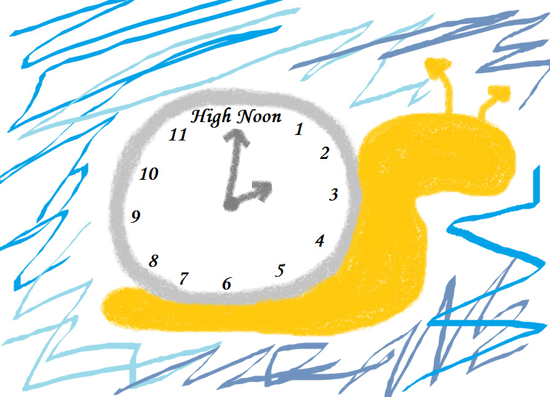

Part of me thinks that it is because of the fact that we are communicating with each other through the screen, rather than welp, direct 1 on 1 classic mafia setting. So we usually care less about other’s feeling when we are typing and what not.
2 Likes
I used to have a lot of stress in my first two games until I “got in my shoes” because I kept getting lynched every game (I was both bad scum and scummy town). Coming in deadchat and seeing the resolution of the game is… pacific of sorts, and teached me it was only a game.
Yep, I complain on this all the time because Reaper left for that.
One thing I did back in the day was to leave in the middle of a heated argument if I couldn’t stand it. Literally ignoring the game and going to do something else, then returning when I was calmer (usually half a hour, I was still stringed up but much better in behavior).
Also, if a discussion is stressful because of people being un-nice with themselves, you can always ask the host if they could make people tone down because it is affecting you.
If you feel anxious because you are a caught wolf… I have learnt to enjoy this feeling because I want to see what will happen next. Think of it as other players suceeding, not you failing, and try to see the main point where why they suceeded instead of discussing 1000 hours in details (unless you want to divert the thread), where it often becomes annoying and grindy to be at.
Something that also helped me was when I got 1 or 2 votes and asked my mafia team what to do. They told me to keep playing because 1 or 2 votes were not important in a 20p mash, and that I would clear myself from them if I continued playing.
Me on Orange + FK at VCFM, ngl.
After that I noticed all that emotional distress was useless when I reached deadchat.
Deadchat is a great place because it is still gametalk, but enlightened pacific gametalk.
- Usually wolves pushing agenda
- Will softgaslight you
I faced this and it really sucked, particularly when I was against the main consensus and turned up to be right. I have found out that my reading is actually quite decent although far from GOAT, I just don’t have enough confidence to convince other people of them and it is worse when people simply handwave me even when I do try to.
Usually the people who really ignore you in this case are the mafia or easy-to-sheep town. The persistent ones would try to see your side on their own instead of following someone else’s bias.
I quite honestly believe that the best defense to a deathtunnel is to be able to point it out to the thread it is a deathtunnel, because the people behind the accusation ignores all your reasoning. It is part of the game, but if it is really death-y you can point it out.
Yep, that is true. They are more casual on a way.
Yes. That’s why distancing (taking breaks) from the game is good. You regain awareness that it is just a game.
I agree with that. I particularly like when the game gets heated — before that it is just an apathy simulator, I can’t get invested in something without motion. That’s part of the appeal of the game.
Same happened with me but with opposite alignments. Took me a long time to recover because it hit my nails.
3 Likes
omg I made a wallpost what is happening with me
1 Like
Lmao definitely scum go die plz /s
Eh, just like that @_@
Wallpost = locktown
(I agree with every single point of this)
That’s why I’m never locktown 
Latin = locktown
Now try to understand why did I use this lawyer envirement paroemia.
It solves everything and nothing in this topic.
1 Like
That’s why I’m a trash player
do speaking in latin-based languages also work
Does it look smart to you?
Are you more likely to follow smart person?
Does it matter if it’s townie if people follow you anyway?

1 Like
@Vulgard I’m sorry if you felt I overreacted. I probably did. Hope you can forgive me and we can move on
1 Like
I’m probably still going to talk about this post-game but I have no hard feelings either way. I don’t want to elaborate because the rules exist.
3 Likes
Uh just my two sense on this subject from a person who can me emotionally unstable a lot due to my emotions just being ridiculous from ebing overly angry, sad, or just normal(well my normal  ) . I think there was a recent message of mine or two that might have somewhat sparked this due to me getting a like on this recently.
) . I think there was a recent message of mine or two that might have somewhat sparked this due to me getting a like on this recently.
LOTR was a great setup, and its nothing bad at Luxy or Geyde. They were great ass hosts. BUT, I didnt have the greatest time due to oog. My life was kinda spiraling into a shitstorm. So that inital anxiety mixed wth being rolled sum had a lot of weight that suddenly I just couldnt hold.
After fucking up I made this post, cause in the time due to my lack of thinking I claimed flavor, that even though it wasn’t mine, it was still enough to get modkilled and I idiotically did it, so as like a last hurrah I said this. This was aimed at a certain person that angered me beyond beleive atm. I have no qualms with them now, they probably dont even know who they are, but I am not angry or mad or sad at them. BUT I WAS PISSED AND SAD in the moment. Simply i felt shutdown there since no matter what I said, I was scum. It wasnt even deragatory or that mean looking back, but it just hit deep enough during my current state that it hurt especially coming from someone I see as a good friend. I cried butt felt a sense of releif afterwards that my small break from fm was starting and i would have less on my plate. It was true I was scum, but idk emotions were high and it just stung. Do i hate this person would i say they were toxic for saying these things? No. They are a great person its just not the best mood mixed with a bad mental state mixed with shut downs of my play, that hurt. Like the thing is I looked back after the stress was gone and I cant really blame them it was a game and they were simply playing a game, playing it right as they caught me.
All I ask is just remember when talking to people, they are just as human as you are (maybe except the bots like Priestess /s). You may not know whats going on IRL so just treat them right. Even if you caught them, even if they are being a jerk to you, hostlity is never the answer. Like if something or someone is bothering you speak up. Follow the Golden rule escentially
1 Like
Please stop talking about ongoing games.
Oh ti’s been said
1 Like
LOTR is not ongoing but I know u mean others not me
Sorry
No worries, its in the past and it wasnt even you
My opinion is that FM is not for the faint of heart.
That’s simply how it is. It’s a very niche enjoyment and breaks seem commonly a necessity even for the most experienced players
A big emotional investment sometimes means a turn downards. That’s unavoidable. You can’t experience a high from seeing the right scum flip or leading a mislynch if you don’t also experience the low when being mislynched or found out as scum. I think you employ the same strategies you do for other “dangerous” stereotypical addiction like activities like gaming/alcohol etc. If it starts impacting your daily life in negative ways, you curb your time on it. Moderation is key and where moderation lies varies from case by case. If you have to go cold turkey, do it. It’s literally supposed to be a form of entertainment after all. It’s all up to you.
13 Likes
I want to respond to this post, but honestly I believe that everyone (Especially Solic) has said it perfectly.